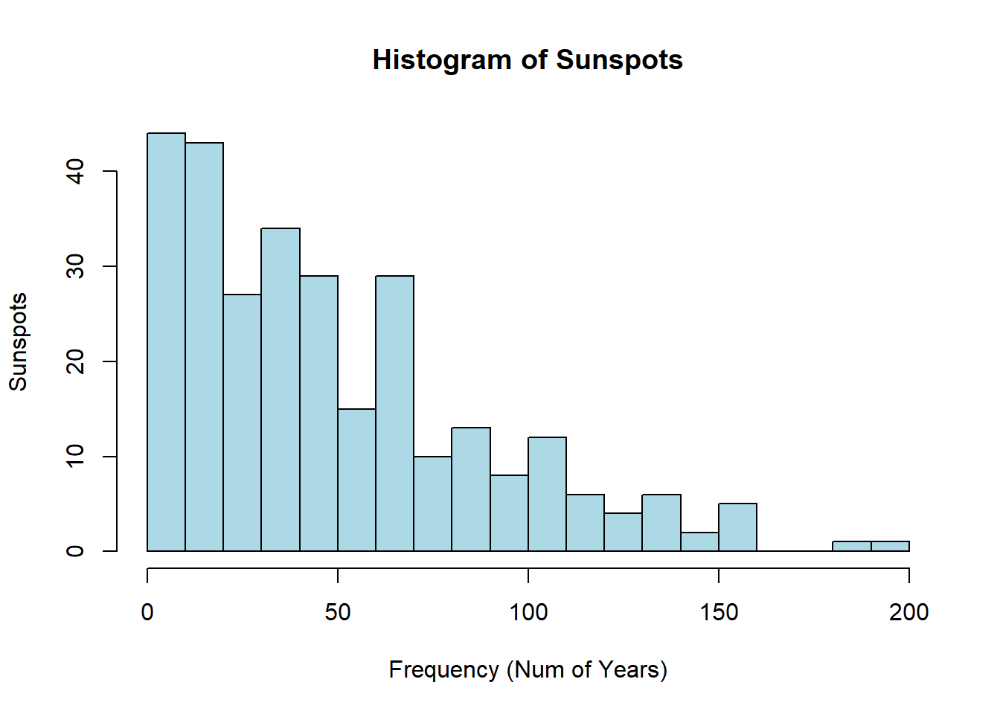
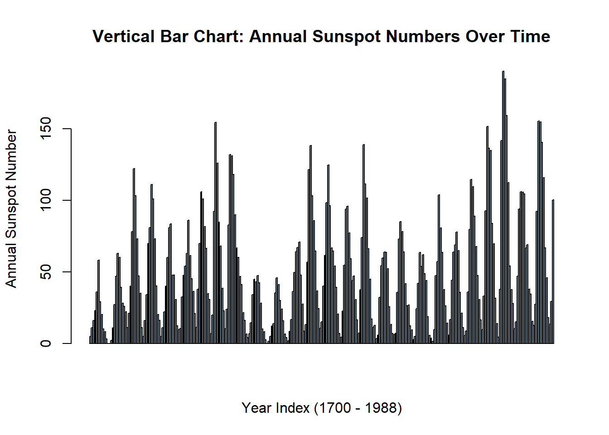
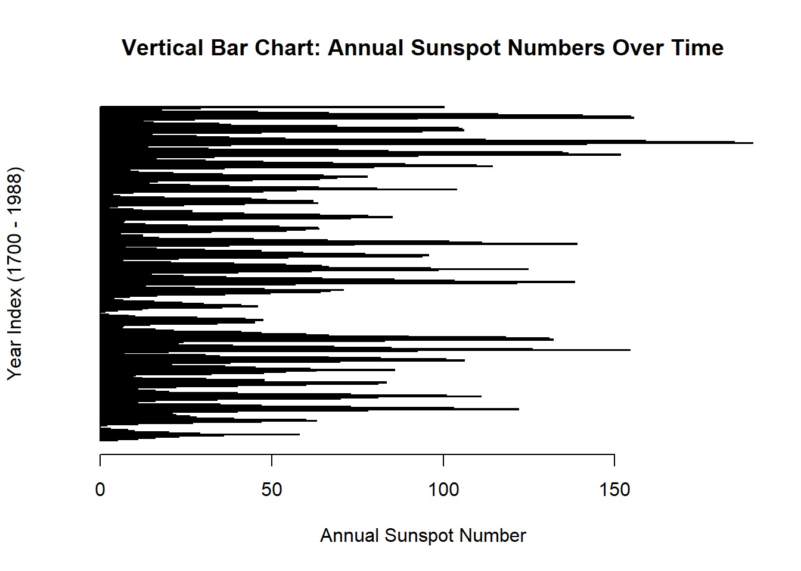
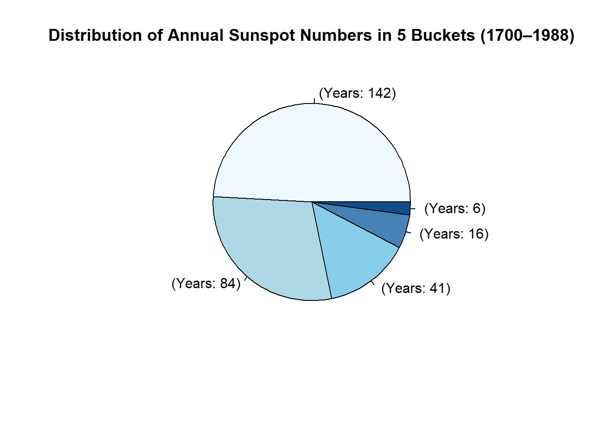
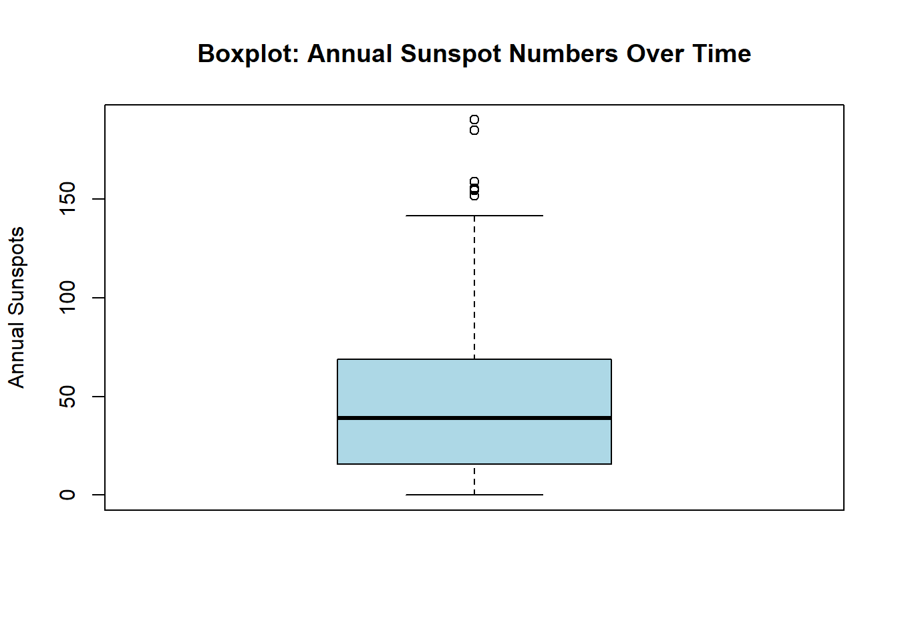

# Select Export
exp <- "pdf"
exp_type <- get(exp)
exp_file <- paste0("Sunspot_Charts.", exp)
data(sunspot.year)
sunspot <- as.numeric(sunspot.year)
years <- time(sunspot.year)
df <- data.frame(year = years, sunspot = sunspot)
Buckets <- cut(
sunspot,
breaks = 5,
include.lowest = TRUE
)
bucket_counts <- as.data.frame(table(Buckets))
bucket_colors <- c("#F0F8FF", "#ADD8E6", "#87CEEB", "#4682B4", "#104E8B")
bucket_labels <- paste0(bucket_counts$buckets, " (Years: ", bucket_counts$Freq, ")")
par(family = "sans")
#exp_type(exp_file)
hist(sunspot, # histogram function
breaks = 20,
col = '#ADD8E6',
main = 'Histogram of Sunspots',
xlab = 'Frequency (Num of Years)',
ylab = 'Sunspots'
)
barplot(
sunspot, #Vertical Bar Plot
main = 'Vertical Bar Chart: Annual Sunspot Numbers Over Time',
xlab = "Year Index (1700 - 1988)",
ylab = "Annual Sunspot Number",
col = '#ADD8E6',
border = "black",
names.arg = years, # Pass the years, but they won't be drawn due to xaxt="n"
xaxt = "n"
)
barplot( #Horizontal Bar Plot
sunspot,
main = 'Vertical Bar Chart: Annual Sunspot Numbers Over Time',
xlab = "Annual Sunspot Number",
ylab = "Year Index (1700 - 1988)",
col = '#ADD8E6',
border = "black",
names.arg = years,
yaxt = "n",
horiz = TRUE
)
pie(
bucket_counts$Freq,
labels = bucket_labels,
col = bucket_colors,
main = 'Distribution of Annual Sunspot Numbers in 5 Buckets (1700–1988)'
)
boxplot(
sunspot,
main = 'Boxplot: Annual Sunspot Numbers Over Time',
ylab = "Annual Sunspots",
col = '#ADD8E6',
border = "black"
)
plot(
years,
sunspot,
main = 'Scatterplot: Annual Sunspot Numbers Over Time',
ylab = "Annual Sunspots",
xlab = "Year",
col = '#4682B4',
pch = 8,
type = "p"
)